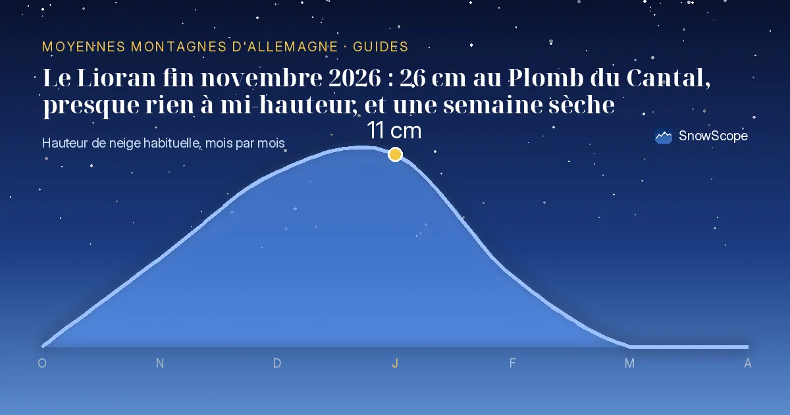

Le Lioran fin novembre 2026 : 26 cm au Plomb du Cantal, presque rien à mi-hauteur, et une semaine sèche
Le Lioran a 26 cm de neige vers le sommet du Plomb du Cantal ce samedi 28 novembre, mais à 1 492 m, l'altitude du Font d'Alagnon et du haut des téléskis, le sol est à peine blanc : 1 cm. C'est exactement la normale d'une fin novembre dans le Cantal, où la neige n'est présente à cette hauteur que dans 57 % des hivers à cette date. La semaine qui vient est sèche.
Consultez les prévisions neige en temps réel pour Le Lioran sur l'application SnowScopeHauteurs de neige, alertes poudreuse et carte 3D, gratuitement.
La situation aujourd'hui
La neige du haut date de la semaine dernière ; depuis mercredi il n'est rien tombé, et le manteau du sommet descend lentement, de 29 cm jeudi à 26 cm aujourd'hui. Aucune chute n'est annoncée d'ici mardi. Le froid est là, ce qui permet au moins de produire de la neige sur le front de neige du Lioran.
De l'autre côté du massif, Super-Besse n'a aucune neige au sol aujourd'hui, ni en bas ni en haut du Puy de Sancy côté pistes.
Pourquoi le Massif Central est un pari en décembre
Le Lioran monte de 1 161 m à 1 822 m, et à 1 492 m la hauteur de neige habituelle est de 4 cm le 15 décembre et 4 cm le jour de Noël. Un hiver sur quatre a plus de 12 cm à Noël, et un sur dix dépasse 32 cm : ce sont ces hivers-là qui font les bons Noëls cantaliens.
La neige est présente au sol à Noël dans 70 % des hivers, mais rarement épaisse. Le Lioran skie donc en décembre grâce à la neige de culture et à l'altitude de ses pistes hautes, et attend janvier et février pour ses meilleures semaines.
Que faire au Lioran ce week-end
Les pistes hautes du Plomb du Cantal gardent leur neige ; les retours en station dépendent des enneigeurs. Pour la randonnée, la raquette et la luge, le haut du domaine et le col de Prat-de-Bouc restent blancs toute la semaine.
Le téléphérique du Plomb du Cantal permet de monter voir la neige même quand les pistes basses sont fermées. La page enneigement du Lioran donne chaque jour les hauteurs en bas, au milieu et en haut.
Questions fréquentes
Peut-on skier au Lioran début décembre ? Sur les pistes hautes et enneigées artificiellement, selon la décision de la station ; pas sur l'ensemble du domaine.
Quand y a-t-il le plus de neige ? Les meilleures semaines d'un hiver normal au Plomb du Cantal arrivent en février ; le 6 janvier n'a habituellement que 4 cm à 1 492 m.
Le Lioran ou Super-Besse pour un week-end ? Cette semaine, Le Lioran sans hésiter : il a de la neige en haut, Super-Besse aucune.
Ce que la station fait de sa neige
Le Lioran a appris à vivre avec ces chiffres : la plupart des pistes principales sont équipées d'enneigeurs, et les pistes hautes du Plomb du Cantal, exposées au nord, gardent la neige naturelle plus longtemps que le reste du massif. Le 20 décembre a habituellement 3 cm à 1 492 m et le 24 décembre 4 cm : le Noël cantalien se joue sur les enneigeurs, et l'hiver naturel, lui, se joue en février.
Pour fixer les ordres de grandeur du Cantal : 26 cm au sommet à 1 822 m, 1 cm à 1 492 m, rien au pied des pistes à 1 161 m. La semaine écoulée a laissé 17 cm au sommet et la semaine à venir n'en annonce aucune. Le Lioran reste, avec Super-Besse, la seule vraie station de ski du Massif Central ; sa saison dépend d'une poignée d'épisodes neigeux par hiver, et chaque épisode se joue en quelques jours.
Conseils aux skieurs
- Montez au Plomb du Cantal ce week-end pour la neige et le panorama ; gardez le ski de piste complet pour le premier vrai coup de froid de décembre.
- Surveillez les ouvertures au jour le jour : dans le Massif Central, tout se décide à quelques degrés.
- Comparez avec les Pyrénées et les Alpes sur la page France.
À propos de ces chiffres
Chiffres de neige : la carte et la prévision SnowScope du jour, et notre historique de 46 hivers passés pour chaque station (une estimation pour la zone, pas le bulletin de la station).
Bulletins d'avalanche officiels: Météo-France BERA
Citer ce bulletin
Pour la recherche, l'enseignement ou la presse : chiffres et graphiques réutilisables librement sous CC BY 4.0 avec cette citation.
SnowScope (2026), Le Lioran fin novembre 2026 : 26 cm au Plomb du Cantal, presque rien à mi-hauteur, et une semaine sèche, https://snowscope.app/blog/fr/2026/11/le-lioran-cantal-neige-fin-novembre-2026-plomb-du-cantal-blanc-mi-hauteur-nue.html, consulté le 2026-11-28
SnowScope (Atlas Labs). (2026, November 28). Le Lioran fin novembre 2026 : 26 cm au Plomb du Cantal, presque rien à mi-hauteur, et une semaine sèche. SnowScope snow reports. https://snowscope.app/blog/fr/2026/11/le-lioran-cantal-neige-fin-novembre-2026-plomb-du-cantal-blanc-mi-hauteur-nue.html
BibTeX
@misc{snowscope2026leliorancantalneigefinno,
author = {{SnowScope (Atlas Labs)}},
title = {Le Lioran fin novembre 2026 : 26 cm au Plomb du Cantal, presque rien à mi-hauteur, et une semaine sèche},
year = {2026},
month = nov,
howpublished = {\url{https://snowscope.app/blog/fr/2026/11/le-lioran-cantal-neige-fin-novembre-2026-plomb-du-cantal-blanc-mi-hauteur-nue.html}},
note = {Published 2026-11-28 14:58 UTC; accessed 2026-11-28}
}· CC BY 4.0 · Méthodes, données et outils →
Le Lioran : neige et température selon l'altitude, cet hiver vs l'hiver dernier (outils) →
Suivre Le Lioran
Gratuit : un message quand la neige arrive, et la météo chaque matin.